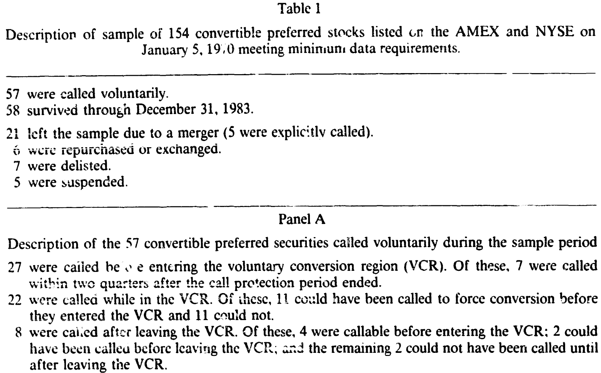
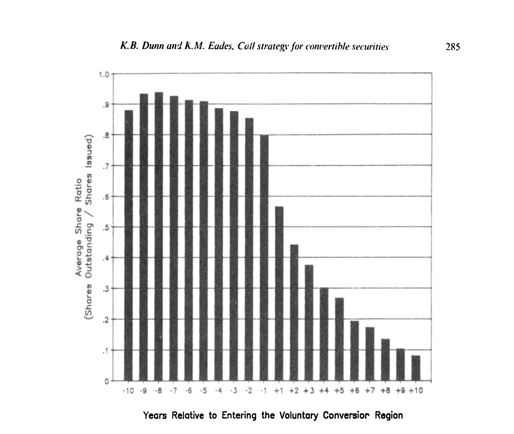
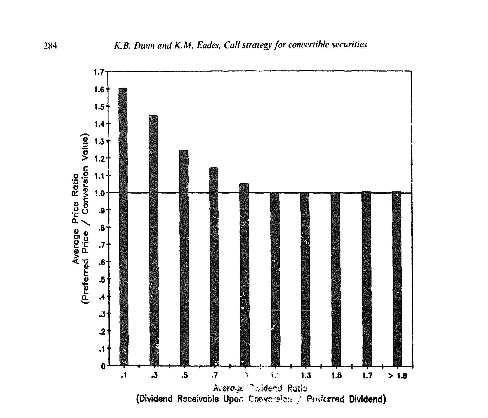
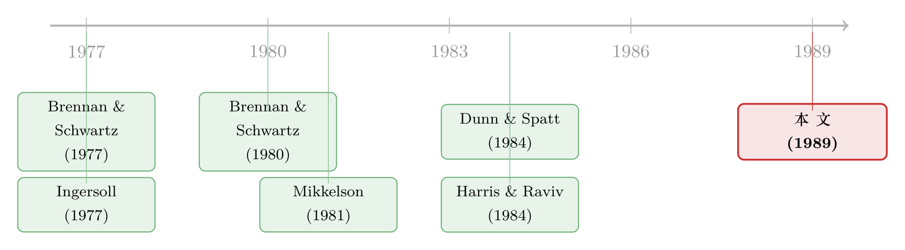

迟迟不肯赎回的可转债，原来是在等你「懒得换股」
本文读的是 Dunn & Eades (1989, Journal of Financial Economics)：完美市场理论说，一旦转换价值超过赎回价，公司就该立刻赎回可转换证券；可现实里公司常常拖上好几年才动手。两位作者把矛头从「公司」转向「投资者」——只要还有相当一批持有人懒得行使自愿转换，把赎回往后拖，反而对公司最有利。他们用 154 只可转换优先股证明：那些迟迟不被赎回的「幸存者」，转换价值对赎回价的溢价高达 72.0%（被赎回组只有 33.1%），而且公司就算改用「第一时间赎回」的完美策略，也几乎一分钱都多赚不到。
1 一个被理论判了死刑、却天天发生的现象
先讲一个让人有点不舒服的事实。
可转换证券（convertible security）——无论是可转债还是可转换优先股——本质上是一份「债 + 期权」的打包：持有人可以按约定比例把它换成普通股，发行公司则保留按合约赎回价（call price）强制赎回的权利。一旦公司发出赎回通知，投资者只剩两条路：要么按赎回价把证券交回，要么赶在截止日前转换成普通股。
Brennan & Schwartz (1977, 1980) 和 Ingersoll (1977a) 早就给出了完美市场下的最优赎回策略：在没有税收、没有交易成本的理想世界里，只要投资者会按「捕捉更高股利、实现财富最大化」的完美策略自愿转换，公司就应当在转换价值（conversion value）一触及赎回价的那一刻立刻赎回，一秒都不该多等。道理也直白：再拖下去，公司就要白白多付股利、白白把那份转换期权继续送给投资者。
这里的「转换价值」就是把可转换证券立刻换成普通股能值多少钱，等于转换比例（conversion ratio）乘以普通股价：\(\text{conversion value} = CR \times P^{c}\)。当它超过赎回价，理论上赎回就该按下扳机。
可现实呢？现实是公司死活不肯按这个剧本演。Ingersoll (1977b) 统计了 1968–1975 年间被赎回的可转换证券，发现赎回那一刻，转换价值对赎回价的溢价中位数高达 43.9%（可转债）和 38.5%（可转换优先股）。也就是说，公司平均要等到「该赎回」的信号亮起很久很久之后，才慢吞吞地发出赎回通知。Mikkelson (1981) 还补了一刀：公司一宣布赎回，普通股价往往不升反降。
理论说该立刻动手，公司却集体拖延——这就是著名的「延迟赎回之谜」（late-call puzzle）。
2 换一个方向看问题：会不会是投资者先「不听话」？
接着，一个自然的问题是：既然理论和现实对不上，错在哪一边？
此前所有试图解释这个谜的工作——Ingersoll (1977b)、Harris & Raviv (1984)——走的都是同一条路：默认投资者老老实实地按完美市场策略转换，然后去给公司这一侧叠加各种市场摩擦（税、发行成本……），看能不能把「延迟」算出来。换句话说，大家都盯着公司的赎回决策做文章，没人怀疑过投资者那一侧的假设。
Dunn & Eades 的关键一步，恰恰是回过头去拷问那个被所有人当作前提的假设：投资者真的会按完美市场策略转换吗？
他们的答案是：不一定。市场上存在一批「被动投资者」（passive investors）——当普通股的股利已经高过可转换证券的股利时，他们本该转换以捕捉更高的现金流，却迟迟不转。可能是交易成本，可能是机构持有普通股的限制，也可能只是疏忽。两位作者特别强调：被动并不等于非理性，但即便找不到完全理性的理由，公司也绝不该假装他们不存在。
于是真正关键的一步出现了：公司的赎回决策和投资者的转换决策，是一对相互嵌套的策略选择。 如果公司预期到有相当一批持有人会「懒得换股」，那么不赎回反而能占这批人的便宜——公司继续只付那份较低的优先股股利，而不必因为强制转换而背上更高的普通股股利。拖延，成了一门对公司有利的生意。
反转就此完成：延迟赎回不是公司算错了账，恰恰是公司算准了投资者会算错账。
（可转债天生就是一种「绕着弯」的融资工具，关于它为什么是「不好意思直接增发」的后门股权，可参见《走后门的股票》；而赎回本身作为一种可信承诺的博弈，可参见《威胁要「全赎回」，债主该不该信？》。）
3 为什么偏偏选「优先股」，而不是「可转债」
在搭模型之前，作者先做了一个很要紧的取舍：只研究可转换优先股，不碰可转债。
理由是干净。完美市场赎回策略的推导，强烈依赖 Modigliani & Miller (1958) 那条「无税完美市场里公司价值与资本结构无关」的命题。可一旦换成可转债，问题立刻被两件事污染：
- 利息税盾。公司对债券税后支付的估值，会和债券的市场价值不一致，因为利息和股利在公司层面的税收待遇不同。于是赎回可转债的最优策略远比完美市场策略复杂——不到转换价值超过赎回价、且「从持有人手里挤出的价值」超过「撤销赎回对资本结构和税盾的影响」与「赎回价和债券税后支付价值之差」二者中的较小者，公司都不该赎回。
- 发债动机不清。为什么成熟健康的大公司要发可转债，学界至今没说清。而可转换优先股的发行动机反而清楚得多——样本里
89%是在并购中发行的，目的是构成免税证券交换、避免给被收购方股东带来资本利得税。
此外，优先股不像债券有到期日，也几乎不会因为违反优先债契约而被迫赎回——少了一堆干扰项。把可转债换成可转换优先股，等于把一道沾满税务油污的题，擦干净了再做。
4 模型：一场「公司 vs. 主动者 vs. 被动者」的博弈
这篇论文有一个借鉴自 Dunn & Spatt (1984) 偿债基金债券博弈（sinking fund bond game）的博弈论模型。把它的逻辑一步步拆开。
设定。 公司的资本结构由普通股和一只优先的、可赎回的可转换优先股构成。博弈里有三类玩家：公司（代表普通股股东）、可转换证券里的主动投资者和被动投资者。公司的目标是选一个赎回策略，最大化普通股股东的财富。
两类投资者的行为。 主动投资者遵循完美市场的自愿转换策略——一旦证券进入「自愿转换区」（voluntary conversion region, VCR）就立刻转换；被动投资者则只转换 12%，因而捕捉不到那份更高的普通股股利。
什么是 VCR？ 自愿转换区，是指转换可得的股利超过优先股股利、再加上除息日相对转换价值的溢价的那段区间。写成条件就是：
$$D^{c} \;>\; D^{p} + \delta_{T}$$
这里 \(D^{c}\) 是转换成普通股后可领的股利，\(D^{p}\) 是优先股股利，\(\delta_{T}\) 是除息日相对转换价值的溢价。一旦跨过这条线，理性的持有人「本该」转换。
公司的取舍。 公司的最优策略是：当可转换证券的整体价值超过总赎回支出时才赎回。 反过来，只要「被动投资者带来的预期收益」还高于「从主动者那里能挤出的转换期权价值」加上「从所有投资者那里能挤出的股利差价值」，公司就会一直把赎回往后拖。
这里有一个微妙却致命的细节，作者在脚注里点得很清楚：可转换证券的市场价格是由主动投资者决定的。主动者从公司的延迟里获益（延迟让他们的转换期权继续存活、继续多收一份高于普通股的优先股股利），于是会把价格抬到高于被动投资者愿意付的水平。这意味着：从公司角度看，整只优先股的真实价值，低于「市场价 × 总股数」。 正是这个楔子，让赎回时机的判断没法直接用观测到的市场价来做。
最核心的一条线——价格比 PR。 作者用一个叫「价格比」（price ratio, PR）的量，把这套逻辑落到可观测的数据上。它是优先股收盘价，除以「普通股收盘价乘以当日转换比例」（也就是转换价值）：
年度价格比 \(PR\) 就是把当日 \(PR_t\) 在全年有效交易日上取平均。它的解读极其干净：\(PR > 1\) 表示优先股相对转换价值有溢价，\(PR < 1\) 则意味着它居然卖得比转换价值还便宜——这正是后文最反直觉的发现之一。
与 PR 平行，作者还定义了两把尺子：股利比（dividend ratio, DR）= 全年「转换可得的普通股股利」对「优先股股利」之比（\(DR>1\) 即已进入「该转换」的区间）；份额比（share ratio, SR）= 年末仍在外流通的优先股股数，除以累计发行的净股数（\(SR\) 越小，说明转换越多、剩得越少）。这三把尺子——PR、DR、SR——撑起了全篇的实证。
5 数据：154 只优先股，跨越 1970–1983
模型要落地，得有一个不带「事后选择偏差」的样本。
作者的初始样本，来自 1970 年 1 月 5 日那一期《Commercial and Financial Chronicle》上列出的、在纽交所（NYSE）和美交所（AMEX）挂牌的全部可转换优先股——包括那些上一周根本没有成交的。这一步很讲究：只要某只证券当时挂牌就纳入，就避免了「只挑被赎回的发行」所带来的事后选择偏差，让「被赎回的」和「同期幸存下来的」可以放在一起公平比较。
契约条款来自 1970 年的 Moody's 各类手册，样本期一直追到 1983 年 12 月 31 日。剔除掉赎回价递增、条款数据不全等情况后，最终得到 154 只满足最低数据要求的可转换优先股。其命运分布如下表：其中 57 只被自愿赎回，58 只活到样本期末，21 只因并购离场，其余因退市、暂停交易、回购等原因退出。

Table 1
观测单位是「证券 × 年」；关键的研究对象，是那 57 只被赎回的，和那 22 只「本可被赎回却始终没被赎回」的「可赎回幸存者」（callable survivors）。
6 主要结果：拖延，是一门划算的生意
第一块证据：转换确实很慢。 作者把样本里 69 只在生命周期内进入过 VCR 的优先股，按「相对进入 VCR 的年数」对齐，画出平均份额比 SR 的演变（图 2）。结果一目了然：即便股票早已跨进「该转换」的区间，大量份额仍然年复一年地留在外面没有转换——而且这往往伴随着普通股股利的缓慢上升、转换溢价趋近于零。这正是「被动投资者」最直接的画像。

Figure 2: The relation of average share ratio to years relative to entry to voluntary conversion region
为了把「谁主动、谁被动」量出来，作者用机构持有人作为主动投资者的代理（机构受交易成本和制度约束更小、更可能及时转换）。在 48 家数据完整的公司里，他们发现进入 VCR 之后，机构持股的下降速度明显快于非机构持股——主动者跑得快，被动者赖着不走，模型的核心假设拿到了直接支持。
第二块证据：被「拖着不赎回」的，正是溢价最高的那批。 作者把被赎回组和可赎回幸存组做了配对比较。预测很清晰：如果公司是有意把某些发行长期留在外面以榨取被动者，那么幸存者就该有更高的转换价值/赎回价、更低的 SR、更高的 DR、更低的 PR。数据全部对上了：
- 被赎回组的转换价值对赎回价溢价为
33.1%，与 Ingersoll 报告的38.5%中位数相当接近；但可赎回幸存组的溢价高达72.0%，二者差异显著。这说明 Ingersoll 那个「只看被赎回样本」的口径，大大低估了公司延迟赎回的真实程度。 - 进入 VCR 的比例：幸存组里
86.4%（22 只里有 19 只）当时正处于 VCR，而被赎回组只有38.6%（57 只里 22 只）。换句话说，公司更倾向于把那些「早该被赎回」的发行故意晾在 VCR 里。 - 幸存组的 \(DR = 1.954\)、\(SR = 0.161\)——高股利比、低份额比，与「长期不赎回、任由部分股慢慢转换」的画面完全吻合。
第三块证据，也是最反直觉的一块：可转换优先股经常卖得比转换价值还便宜。 作者构造了一个折价指标 DIS（一年中价格比 \(PR<1\)、且普通股当日为负收益的交易日占比，被刻意构造成对真实折价比例的向下偏误估计）。即便如此，幸存组的 \(DIS\) 仍高达 0.737——也就是说，这些证券大部分时间都卖在转换价值之下。图 1 把价格比与股利比的关系画了出来：当股利比升高、证券深入 VCR 时，价格比反而压向、甚至跌破 1.0。

Figure 1: The relation of average price ratio to average divi<:m;t rjtio tar the sample of 115
「卖得比转换价值还便宜」听起来像无风险套利——买入优先股、立刻转换、卖出普通股不就稳赚？作者解释，这部分是非同步交易（thinly-traded 优先股与频繁交易的普通股收盘价不同步）带来的测量噪声，所以 DIS 被刻意做成向下偏误；但即便如此，折价之频繁仍然超出了 Constantinides (1984) 那条「竞争均衡转换路径」所能容纳的范围。这本身就是一个值得追的小谜。
最后的判决：公司改用完美策略，几乎一分不赚。 这是全文的落点。作者反事实地问：如果公司改用完美市场策略——在转换价值首次超过赎回价的那一天就赎回以强制转换——普通股股东会不会赚得更多？他们对 66 只「转换价值首次超过赎回价时尚未进入 VCR」的证券做了测算：用真实的期末优先股价，切换到完美赎回策略的年化增量收益均值仅为 -0.056%，区间 -4.953% 到 1.653%，中位数 -0.003%；标准 t 检验无法拒绝「均值为零」，66 只里 28 只为正，与随机情形下预期的 33 只无显著差异。
结论掷地有声：平均而言，公司无法通过「第一时间赎回」来增加股东财富。 公司之所以拖，不是糊涂，而是因为拖与不拖对它其实无关痛痒——而既然无关痛痒，顺手占一占被动者的便宜，何乐不为。
反观投资者那一侧，账就算得出来了：一个被动投资者若改用完美转换策略，年化增量总收益为 -0.694%（不显著），但年化增量股利收益率高达 1.332%，统计显著；69 个样本里有 60 个的股利差为正。总收益均值之所以被压低，几乎全拜一只异类所赐——APL 的 $0.50 优先股，被赎回时赎回价 $11.50 竟高于转换价值 $10.06（样本里唯一一只在「赎回价高于转换价值」时被赎回的证券），赎回引发的价格跳升在仅 69 天的 VCR 停留期上年化，砸出一个 -215.9% 的巨大负收益。剔除这只异类，被动者改用完美策略本可显著提高年收益。被动者真的在白白漏掉钱——而公司，正在把这笔钱捡走。
（赎回这件事在市场上的价格反应，是另一条有意思的线。关于「公司花钱请投行包销赎回、股价反而下跌」，可参见《花钱请投行替你赎债，市场为什么反而扣你两个点？》；关于赎回时股债两种证券的不同跌法，可参见《同一个赎回，两种跌法》。）
7 文献脉络：从「完美策略」到「不完美的投资者」
把这条线捋一捋，会看到一个很经典的「理论先行、实证反水、再回头修理论」的循环。
最早是 Modigliani & Miller (1958) 奠下「无税完美市场里资本结构无关」的地基。在这块地基上，Brennan & Schwartz (1977, 1980) 和 Ingersoll (1977a) 用或有权益定价（contingent-claims）推出了可转换证券的完美市场赎回策略——转换价值一碰赎回价就该赎回。
然后实证开始「反水」。Ingersoll (1977b) 发现公司普遍拖延赎回（中位数溢价 38.5%–43.9%），Mikkelson (1981) 发现赎回公告伴随股价下跌——理论被现实打了脸。早期的修补思路（包括 Harris & Raviv (1984) 的信号模型）都还守着「投资者完美转换」的假设，只在公司一侧加摩擦。

Dunn & Eades (1989) 的位置，就是第一次把刀口转向投资者，借用 Dunn & Spatt (1984) 偿债基金博弈的框架，把「被动投资者」内生进公司的赎回决策。它不再问「公司为什么不理性地拖延」，而是问「在投资者本就不完美的世界里，公司理性的最优反应是什么」——答案恰恰是延迟。这正是它区别于整条文献的核心贡献。
8 评论与延伸（Q&A + 研究方向）
(a) 几个可能的疑问
Q：「被动投资者」会不会只是给『公司很懒』套了个理论外壳，本质是循环论证？
不完全是。模型有可证伪的预测，而且都对上了：幸存者应当有更高溢价（
72.0%vs33.1%）、更高比例落在 VCR（86.4%vs38.6%）、更高 DR、更低 SR——这些是被动者假设的独立含义，不是同义反复。更关键的是机构（主动代理）转换更快这一直接证据。当然，「为什么有人被动」仍是黑箱，这是它最软的一环。
Q：可转换优先股的结论，能不能推广到可转债？
作者自己很克制：之所以只做优先股，正是为了甩掉可转债的税盾和资本结构污染。所以严格说，结论是关于优先股的。要推广到可转债，必须把利息税盾、最优负债比这些一起塞进模型——那是另一篇论文的工作量。
Q：「公司改用完美策略也不赚」会不会只是样本太小、检验功效不足？
这是真实的隐忧。
66只证券、增量收益均值-0.056%且中位数近乎为零、二项检验也不显著——「无法拒绝零」既可能是真的无差异，也可能是功效不够。作者用了真实和「期末价 = 转换价值」两套口径来稳健化，但样本量摆在那里，这个「零结果」要谨慎读。
Q：优先股卖得比转换价值还便宜，难道不是白捡的套利？
表面上是，实际不是。优先股交易稀薄、与普通股收盘价不同步，折价指标被刻意做成向下偏误；扣掉噪声后，真正可执行的套利空间被交易成本和借券难度吃掉。但折价之频繁仍超出 Constantinides (1984) 竞争均衡所能解释——残留的部分是个真问题。
Q：这对「赎回公告引发股价下跌」（Mikkelson 1981）有什么含义？
提供了一个不靠「负面信号」的解释。若市场早已预期到公司会延迟赎回以榨取被动者，那么真正发出赎回、把这块「被动者租金」终结时，普通股股东的预期收益被部分收回，价格自然承压——下跌未必是坏消息，而是「占便宜的日子到头了」。
Q：被动行为是非理性吗？
作者明确说「不」。交易成本叠加机构持有普通股的制度限制，足以让被动转换成为理性选择。他们的立场是：哪怕被动者无法被完全理性化，公司也不该假装他们不存在——因为忽略他们对公司不是最优。
(b) 几个可能的研究问题与提案
1. 把同一逻辑搬到当代可转债市场，并控制税盾。 - 【经济故事】今天的可转债市场规模远超 1980 年代，赎回延迟依旧普遍。若能用结构模型把利息税盾与被动转换同时内生，就能分离「税盾驱动的延迟」与「被动者驱动的延迟」。 - 【可行性】中。数据可得（SDC、Mergent FISD 有可转债条款与赎回事件），难点在识别——需要外生的税率变动或投资者结构变动来撬开两条渠道。
2. 用持有人微观结构直接刻画「主动 vs 被动」。 - 【经济故事】本文用机构持股做主动者代理，是粗粒度的。若能拿到逐月、逐持有人类别的转换行为，就能把「被动者比例」这个隐变量直接估出来，并检验它是否预测公司的赎回时点。 - 【可行性】中高。13F、共同基金持仓、TRACE/转托管记录可拼出持有人画像；识别策略可用「股利缺口扩大」作为应转换的冲击，看不同持有人的转换响应。
3. 信用市场里的「被动持有人」与流动性。 - 【经济故事】可转换优先股「卖在转换价值之下」的折价，本质是稀薄交易 + 借券约束。把它放进公司债/信用市场，能否用「持有人惰性」解释某些可赎回信用债的赎回延迟与价格折价？这与外资、机构这类「惰性持有人」的流动性供给直接相关。 - 【可行性】中。需要债券层面的赎回事件与持有人数据；可借鉴本文的折价构造法，但要更细致地处理非同步交易偏误。
4. 「公司占被动者便宜」的福利与公司治理含义。 - 【经济故事】公司延迟赎回，相当于普通股股东对被动持有人的一次隐性财富转移。这是否随治理强度、机构持股集中度而变化？治理更好的公司是更会、还是更不愿榨取被动者？ - 【可行性】中低。需要把「被动者租金」量化成一个可比的横截面变量，再与治理指标对接，内生性较强，识别有挑战。
9 我的判断
这篇论文最漂亮的地方，是它的问法。当所有人都在「公司一侧」加摩擦时，它反手去拆「投资者完美转换」这个被默认了十几年的前提——一旦松开这颗螺丝，延迟赎回从「公司的错误」变成了「公司的最优反应」，整个谜就自己解开了。配上「只用优先股以保住 MM」的干净取舍，和「改用完美策略也不赚」这个直击要害的反事实检验，论证链条相当完整。
对识别，我有两点保留。其一，「被动投资者」始终是个未被打开的黑箱——文章证明了它的存在与后果，却没真正解释它的成因，这让模型更像一个「拟合现象的装置」而非「揭示机制的理论」。其二，核心反事实的「零结果」依赖一个小样本（66 只），均值近零、检验不显著，既可能是真无差异，也可能是功效不足；APL 这一只异类就能把被动者收益的总体均值从「显著为正」拉成「不显著」，足见样本之脆弱。
往后我最想看到的，是用今天的持有人级数据把「被动者比例」直接估出来，并检验它是否真的预测赎回时点——把这个隐变量从「假设」变成「可测量」。如果能做到，这条 1989 年开的口子，会在当代可转债与可赎回信用债市场里长出一整片新的实证。
参考文献
Brennan, M.J. and E.S. Schwartz (1977). Convertible bonds: Valuation and optimal strategies for call and conversion. Journal of Finance 32(5), 1699–1715.
Brennan, M.J. and E.S. Schwartz (1980). Analyzing convertible bonds. Journal of Financial and Quantitative Analysis 15(4), 907–929.
Constantinides, G.M. (1984). Warrant exercise and bond conversion in competitive markets. Journal of Financial Economics 13(3), 371–397.
Dunn, K.B. and C.S. Spatt (1984). A strategic analysis of sinking fund bonds. Journal of Financial Economics 13(3), 399–423.
Dunn, K.B. and K.M. Eades (1989). Voluntary conversion of convertible securities and the optimal call strategy. Journal of Financial Economics 23(2), 273–301.
Green, R.C. (1984). Investment incentives, debt, and warrants. Journal of Financial Economics 13(1), 115–136.
Harris, M. and A. Raviv (1985). A sequential signalling model of convertible debt call policy. Journal of Finance 40(5), 1263–1281.
Ingersoll, J.E. (1977a). A contingent-claims valuation of convertible securities. Journal of Financial Economics 4(3), 289–321.
Ingersoll, J.E. (1977b). An examination of corporate call policies on convertible securities. Journal of Finance 32(2), 463–478.
Mikkelson, W.H. (1981). Convertible calls and security returns. Journal of Financial Economics 9(3), 237–264.
Modigliani, F. and M.H. Miller (1958). The cost of capital, corporation finance and the theory of investment. American Economic Review 48(3), 261–297.